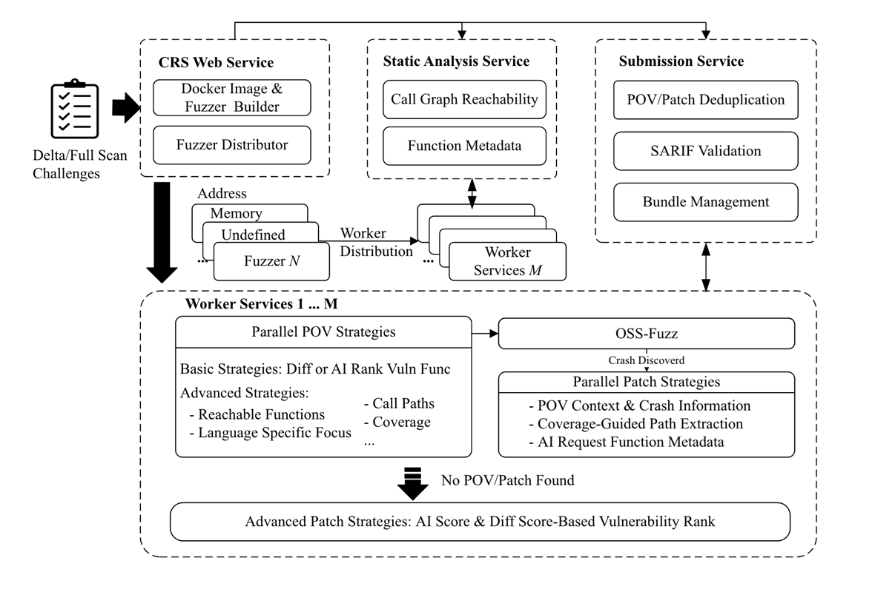

CRS Overview
Made By Team All_you_need_is_a_fuzzing_brain
💡This Cyber Reasoning System (CRS) is an AI-driven automated vulnerability detection and remediation framework built upon the OSS-Fuzz infrastructure. Developed by the team "all_you_need_is_a_fuzzing_brain" for the 2025 DARPA AIxCC (Artificial Intelligence Cyber Challenge) finals, CRS represents a state-of-the-art approach to automated software security analysis.
